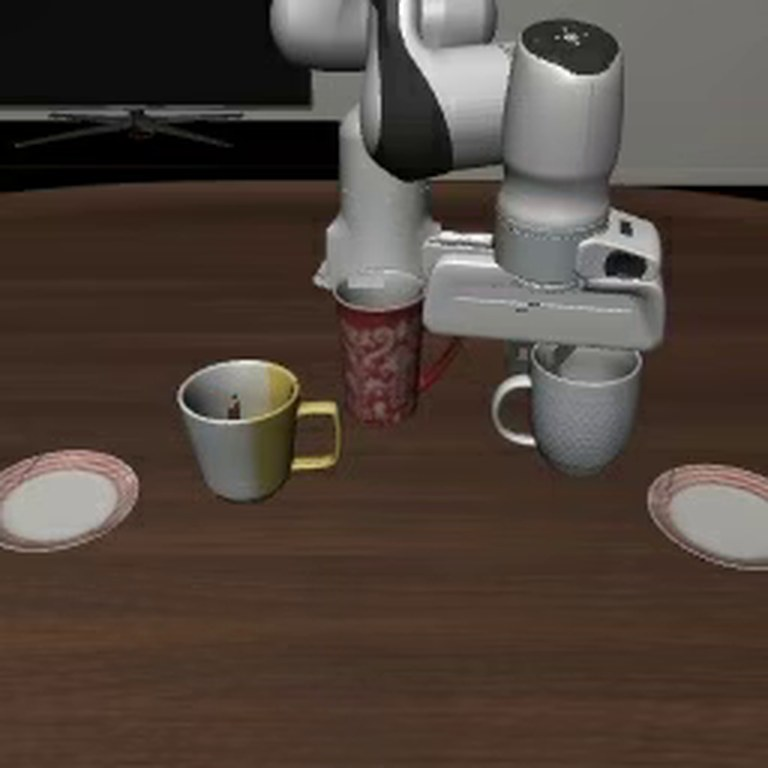
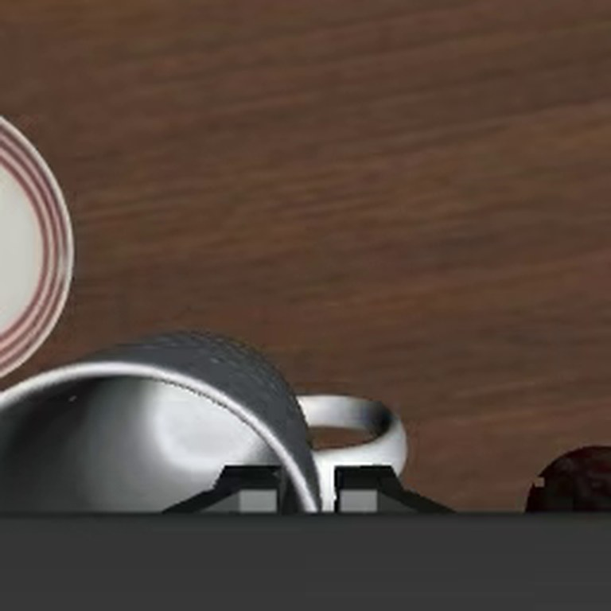

Four robots you will meet
The methods in this guide run on machines like these. The bodies differ, and the recipe is the same: cameras in, action chunks out.


What the body decides
The same learning methods run on very different machines. The body sets the action space, the data you can collect and what can go wrong. Degrees of freedom below are typical ranges.
| Embodiment | Degrees of freedom | Strengths | Challenges for learning |
|---|---|---|---|
| Arms and collaborative robots | 6 or 7, plus gripper | Precise, mature, safe to work beside | A fixed base limits reach and the tasks available |
| Parallel grippers | 1 | Simple, robust, easy to learn | Cannot re-orient an object in the hand |
| Dexterous hands | 12 to 20 or more | Human-like manipulation | Hard to teleoperate, fragile, a large action space |
| Mobile manipulators | An arm on a moving base | Large workspace | Base and arm must be coordinated |
| Quadrupeds | 12 | Stable on rough terrain | Little manipulation unless an arm is added |
| Humanoids | 20 to 50 or more | Fit human spaces and tools; can learn from human video | Balance, whole-body control, cost and data collection |
Most public manipulation data comes from single arms with parallel grippers, so that is where policies are strongest today.
Sensing: what the robot knows
A policy can only use what its sensors provide, so choosing and placing sensors is part of the design.




- RGB cameras are the main input for learned policies. Scene cameras give context, and wrist cameras give a close-up of the grasp and a large gain in precision. Their placement must match the training data.
- Depth, from stereo, structured light or lidar, gives geometry directly but is noisy on shiny and transparent objects. Many policies skip it and learn depth from RGB.
- Proprioception, meaning joint positions, velocities and torques, is always available and precise. Policies can lean on it too much and ignore the cameras.
- Touch and force. Force-torque sensors measure contact at the wrist, and tactile sensors measure pressure and slip at the fingertips. They are essential for insertion, fragile objects and anything hidden by the hand.
A useful test: sit a person at the teleoperation station with only the robot’s camera views. If they cannot do the task, the policy cannot either.
Common mistakes
- Moving a camera after collecting data. The policy has learned the old viewpoint.
- Expecting a policy to transfer between bodies for free. A different arm, gripper or camera layout usually needs new data.
- Leaving out touch because data is scarce. It is under-used because tactile data is hard to collect, not because it is unimportant.
Terms
- Degrees of freedom
- The number of independent ways a robot can move.
- End effector
- The tool at the end of the arm, usually a gripper or hand.
- Collaborative robot
- An arm designed to work safely beside people.
- Whole-body control
- Coordinating legs, torso and arms together.